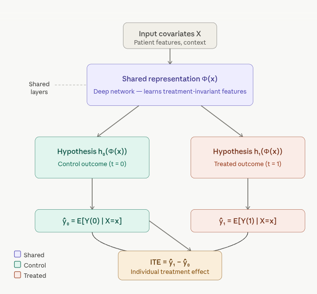
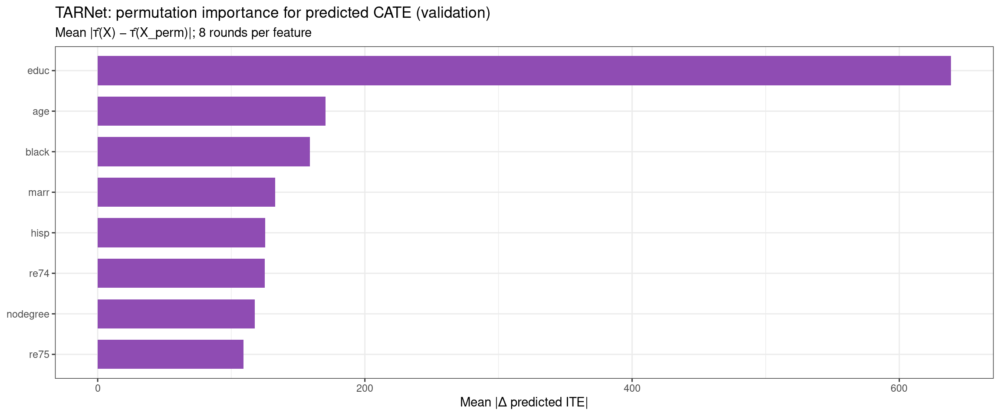

packages <- c(
'tidyverse',
'plyr',
'RCausalML',
'causaldata',
'mlbench',
'xgboost',
'future'
)TARNet (Treatment-Agnostic Representation Network)
This notebook demonstrates how to fit a Representation Learning Network — TARNet (Treatment-Agnostic Representation Network) — using the R package {RCausalML}.Full TARNet uses torch (recommended). If torch is not available, {RCausalML} falls back to a simpler placeholder model; the workflow remains the same, but you will not be training the deep shared-representation architecture.
Overview
TARNet is a neural network architecture designed for causal inference — specifically for estimating individualized treatment effects (ITE) from observational data.
It was introduced by Shalit, Johansson, and Sontag in their 2017 paper “Estimating individual treatment effects: generalization bounds and algorithms.”
The Core Problem It Solves
In observational data, we can never observe both outcomes for the same individual (the fundamental problem of causal inference). If a patient receives drug A, we don’t know what would have happened with drug B. Additionally, observational data suffers from selection bias — sicker patients may be more likely to receive treatment, confounding the estimates.
Architecture: How It Works

How TARNet Works — Step by Step
1. Shared Representation Network (Φ)
The input covariates X (patient demographics, lab results, etc.) are fed into a deep neural network that produces a learned representation Φ(x). This is the core innovation — this shared network learns features that are useful for predicting outcomes regardless of which treatment was applied. It acts as a feature extractor that aims to remove selection bias by mapping similar patients to similar representations.
2. Treatment-Specific Heads (h₀ and h₁)
After the shared representation, the network splits into two separate sub-networks — one for each treatment arm: - h₀(Φ(x)) — predicts the potential outcome under no treatment (control) - h₁(Φ(x)) — predicts the potential outcome under treatment
Each head is trained only on the samples that actually received that treatment, but they share the same learned representation Φ(x).
3. ITE Estimation
For any individual, you pass their features X through the shared network once, then through both heads:
ITE(x) = ŷ₁ − ŷ₀ = h₁(Φ(x)) − h₀(Φ(x))
This gives an individual-level causal estimate of the treatment effect — how much better (or worse) this specific patient would do with treatment vs. without.
Why “Treatment-Agnostic”?
The shared representation Φ is trained to be agnostic to treatment assignment — it shouldn’t encode which treatment group a patient belonged to, only their underlying features. This discourages the network from learning spurious correlations driven by selection bias.
The full CFRNet variant (from the same paper) adds an IPM regularizer (Integral Probability Metric) that explicitly penalizes distributional differences between the treated and control group representations, further reducing bias.
TARNet vs. Other Approaches
| Approach | Key idea | Limitation |
|---|---|---|
| S-Learner | One model, treatment as a feature | Treatment effect can get “smoothed away” |
| T-Learner | Separate models per treatment | No shared learning; high variance |
| TARNet | Shared representation + separate heads | Best of both — shared features, separate predictions |
| CFRNet | TARNet + IPM regularizer | Reduces covariate shift more aggressively |
TARNet is a foundational architecture in the Causal ML toolkit and is widely used as a baseline in treatment effect estimation benchmarks like the IHDP and Jobs datasets. Click any node in the diagram above to explore specific components further!
Implemention in R
TARNet is implemented in {RCausalML} as tarnet(). With torch installed, this trains a deep neural network with the architecture and loss described above. If torch is not available, it falls back to a simpler model that mimics the two-head idea but without learned representation ().
Load and Check Required Libraries
Install Missing Packages
# Install missing packages
#new_packages <- packages[!(packages %in% installed.packages()[,"Package"])]
#if(length(new_packages)) install.packages(new_packages)Verify Installation
# Verify installation
cat("Installed packages:\n")Installed packages:print(sapply(packages, requireNamespace, quietly = TRUE)) tidyverse plyr RCausalML causaldata mlbench xgboost future
TRUE TRUE TRUE TRUE TRUE TRUE TRUE Load Required Libraries
# When rendering from package root, use local RCausalML (so causal_tree fixes are used)
if (file.exists("DESCRIPTION") && requireNamespace("devtools", quietly = TRUE)) {
try(devtools::load_all(".", quiet = TRUE), silent = TRUE)
}
invisible(lapply(packages, function(pkg) {
suppressPackageStartupMessages(library(pkg, character.only = TRUE))
}))Install torch (recommended)
Full TARNet uses torch. Install once if needed:
# install.packages("torch")
# library(torch)
# torch::install_torch()Load data and prepare ((X, t, y))
We use NSW (nsw_mixtape) from causaldata: treatment treat, outcome re78, covariates age, educ, black, hisp, marr, nodegree, re74, re75. After dropping incomplete rows, we split into train and validation; covariates are standardized using the training mean and SD only.
if (!requireNamespace("causaldata", quietly = TRUE)) install.packages("causaldata")
data(nsw_mixtape, package = "causaldata")
df <- as.data.frame(nsw_mixtape)
df$treat <- as.integer(df$treat)
y_col <- "re78"
t_col <- "treat"
x_cols <- c("age", "educ", "black", "hisp", "marr", "nodegree", "re74", "re75")
df <- df[complete.cases(df[, c(y_col, t_col, x_cols)]), ]
p_train <- 0.8
n <- nrow(df)
idx <- sample.int(n, size = round(p_train * n))
df_train <- df[idx, ]
df_val <- df[-idx, ]
X_train_raw <- as.matrix(df_train[, x_cols])
X_val_raw <- as.matrix(df_val[, x_cols])
cm <- colMeans(X_train_raw)
cs <- apply(X_train_raw, 2, stats::sd)
cs[cs == 0] <- 1
X_train <- scale(X_train_raw, center = cm, scale = cs)
X_val <- scale(X_val_raw, center = cm, scale = cs)
t_train <- as.integer(df_train[[t_col]])
y_train <- as.numeric(df_train[[y_col]])
t_val <- as.integer(df_val[[t_col]])
y_val <- as.numeric(df_val[[y_col]])
cat(
"Train n =", nrow(X_train), "| Val n =", nrow(X_val),
"| p =", ncol(X_train), "| TARNet source: R/causalDeepNet.R\n"
)Train n = 356 | Val n = 89 | p = 8 | TARNet source: R/causalDeepNet.RFit TARNet
tarnet() trains with mini-batches on a random subset of each call’s data (val_split holds out a fraction for internal indexing). Hyperparameters hidden, batch_size, epochs, and learning rate (lr, here (10^{-3})) match the defaults documented in causalDeepNet.R.
if (requireNamespace("torch", quietly = TRUE)) {
library(torch)
torch_manual_seed(42)
}
fit_tarnet <- tarnet(
X_train, t_train, y_train,
hidden = c(200L, 200L, 100L),
batch_size = 64L,
val_split = 0.2,
epochs = 100L,
lr = 0.001,
verbose = TRUE
)
cat("Fitted backend — TARNet:", fit_tarnet$type, "\n")Fitted backend — TARNet: tarnet_torch Predict ITE and ATE on validation data
For each unit, ((x) = (1 x) - (0 x)); ( = _i (x_i)).
ite_tarnet <- as.vector(predict(fit_tarnet, X_val))
ate_tarnet <- mean(ite_tarnet)
naive_ate <- mean(y_val[t_val == 1]) - mean(y_val[t_val == 0])
cat("TARNet ATE (val):", round(ate_tarnet, 2), "\n")TARNet ATE (val): 2494.53 cat("Naive diff-in-means (val, biased under confounding):", round(naive_ate, 2), "\n")Naive diff-in-means (val, biased under confounding): -820.68 Permutation-based feature importance (TARNet)
We measure how much predicted CATE ((X)) on the validation fold depends on each covariate using permutation importance: for feature (j), permute column (j) within the validation matrix, recompute (), and take the mean absolute change (|(X) - (X^{}_j)|), averaged over several random permutations. This summarizes the fitted CATE surface; it is not a causal attribution of heterogeneity.
pred_ite_repr <- function(fit, Xm) {
r <- predict(fit, as.matrix(Xm))
if (is.list(r)) {
if (!is.null(r$ite)) return(as.numeric(r$ite))
if (!is.null(r$predictions)) return(as.numeric(r$predictions))
num_el <- r[sapply(r, is.numeric)]
if (length(num_el)) {
v <- as.numeric(unlist(num_el))
nr <- nrow(as.matrix(Xm))
if (length(v) >= nr) return(v[seq_len(nr)])
}
stop("Cannot extract ITE vector from predict() for this fit.")
}
as.numeric(r)
}
imp_tarnet <- NULL
if (nrow(X_val) >= 10L) {
p <- ncol(X_val)
feat_names <- colnames(X_val)
if (is.null(feat_names)) feat_names <- x_cols
n_rep <- 8L
set.seed(4343L)
ite_base <- pred_ite_repr(fit_tarnet, X_val)
imp_mat <- matrix(NA_real_, nrow = n_rep, ncol = p)
for (r in seq_len(n_rep)) {
for (j in seq_len(p)) {
Xp <- X_val
Xp[, j] <- sample(Xp[, j])
imp_mat[r, j] <- mean(abs(ite_base - pred_ite_repr(fit_tarnet, Xp)), na.rm = TRUE)
}
}
imp_mean <- colMeans(imp_mat, na.rm = TRUE)
imp_tarnet <- data.frame(
feature = feat_names,
importance = imp_mean,
stringsAsFactors = FALSE
)
print(
ggplot2::ggplot(
imp_tarnet,
ggplot2::aes(
x = stats::reorder(factor(feature), importance),
y = importance
)
) +
ggplot2::geom_col(fill = "#8F4CB3", width = 0.72) +
ggplot2::coord_flip() +
ggplot2::labs(
title = "TARNet: permutation importance for predicted CATE (validation)",
subtitle = paste0("Mean |\u03c4\u0302(X) \u2212 \u03c4\u0302(X_perm)|; ", n_rep, " rounds per feature"),
x = NULL,
y = "Mean |\u0394 predicted ITE|"
) +
ggplot2::theme_bw()
)
}
Summary
| Step | Description |
|---|---|
| 1 | Load RCausalML (includes tarnet from R/causalDeepNet.R) |
| 2 | Prepare NSW data; train/val split; scale (X) using training statistics |
| 3 | Fit TARNet (factual loss on shared (), two outcome heads) |
| 4 | predict() ITE on validation set; compare mean ITE (ATE) to naive diff-in-means |
| 5 | Permutation importance for predicted ((X)) on validation |
Tune hidden, lr, and epochs for your application. If you need explicit representation balancing, see the CFRNet notebook.
Resources
- TARNet — Treatment-Agnostic Representation Network
- Package implementation:
R/causalDeepNet.R(tarnet,cfrnet,dragonnet,predict.*)